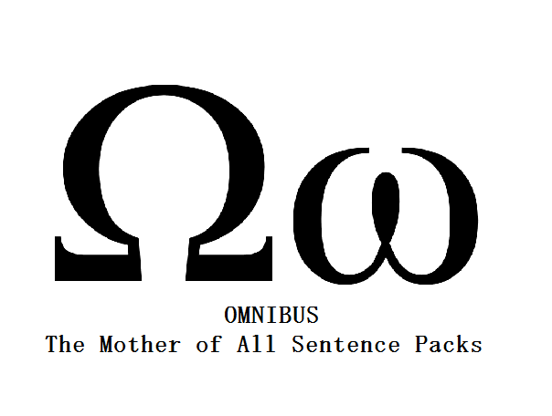

Note: Omnibus was a limited time only offer and has been discontinued. Congratulations to you if you managed to snag it while it was available. And if you didn’t get it while the gettin’ was good…better luck next life! 😛
You love them AJATT sentence packs? Been meaning to get yourself one but haven’t gotten round to it? Well, your time has come! It’s the the sentence pack of sentence packs — Omnibus: The Mother of All Sentence Packs!
So Why Would Anyone Even Want This?
For more or less the same reason why you would want any of the sentence pack. The key words here are ease, convenience and, to quote a Simpsons episode, 「can’t somebody else do it?」. Sure, you could go figure it out all by yourself. Collect all the info, take all the photos, do all the translation.
And there’s nothing wrong with that. There’s nothing wrong with going it alone. Independence is a noble, beautiful thing. I go solo all the time 1. But if you can’t be bothered, if you don’t want to put in the effort, then consider this the equivalent of paying somebody to do your homework for you. Paying someone to do your gruntwork and housekeeping for you. Because, honestly, who can be bovvered, right?
Who’s It For? Who Should Get the Mother of All Sentence Packs?
The Omnibus: Mother of All Sentence Packs is for you if:
- You are getting used to, or wanting to get used to (i.e. “learn”) Japanese, and
- Have bought an AJATT sentence pack before and know how awesome they are
- Haven’t bought an AJATT sentence pack yet and want to save time, effort and money by getting a bunch all at once
- You live in, or want to visit Japan
- You already know hiragana and katakana
Who’s It Not For?
- People who are already native-level in Japanese
- People who don’t know or don’t want to know any Japanese
- People who have the time, cash and energy to compile their own
Don’t MCDs (Massive-Context Cloze Deletions) Make Sentences Irrelevant? Didn’t The 10,000 Method Sentences Die?
The answer to the first question is no. The answer to the second is yes. MCDs re-orient how we work with sentences; they change how sentence packs are used. And as a result, MCDs actually make sentence packs even more useful by allowing us to absorb and internalize them both more deeply and more effortlessly. “More effortlessly” — that sounds funny, but you get the point! Ultimately, the point is to get the language inside your head, inside your body, and MCDs, combined with sentence packs, accomplish this in spectacular fashion.
Sweet! How Can I Get Mine?
The Omnibus Sentence Pack comes in two flavors, basic and deluxe. Basic’s cheaper; deluxe is more value. Both versions contain:
- Natural, authoritative English translations for all the Japanese sentences
- Awesome explanations (also in English), and
- Kanji readings (furigana) to boot.
And it’s all based on engaging, for-native-by-native subject matter that’s actually relevant to your life, because how many times are you going to read a textbook that shows you how to say you’re a student with two brothers and a younger sister before you want to shoot yourself? Exactly.
Basic
|
*DELUXE*
|

{kind=link}
Limited Availability
The Omnibus is only available in its current form and at its current price — if at all — until January 5. Thereafter, the price will go up and/or the deal will be considerably less sweet. For example, the freebies alone on the deluxe version exceed the value of the main package. That kinda sweetness? Gone by January 5. So expect this product to either double in price or disappear altogether by January 5. 😉
Sexy Satisfaction Guarantee
Buy it. Try it. No likey? No payey. Just ask me for a full refund. No fuss. No hassles. Just be like: “I love you, Khatz. You’re so pretty and smart. I just want a refund for the MOAS. I promise I’ll be back soon”, and AJATT staff will run your refund for you with a smile 😀 . We know you’ll be back 😛 .
Oh, we know.
How do we know?
WE JUST KNOW, OKAY! FFS!
Notes:
- PHRASING! ↩